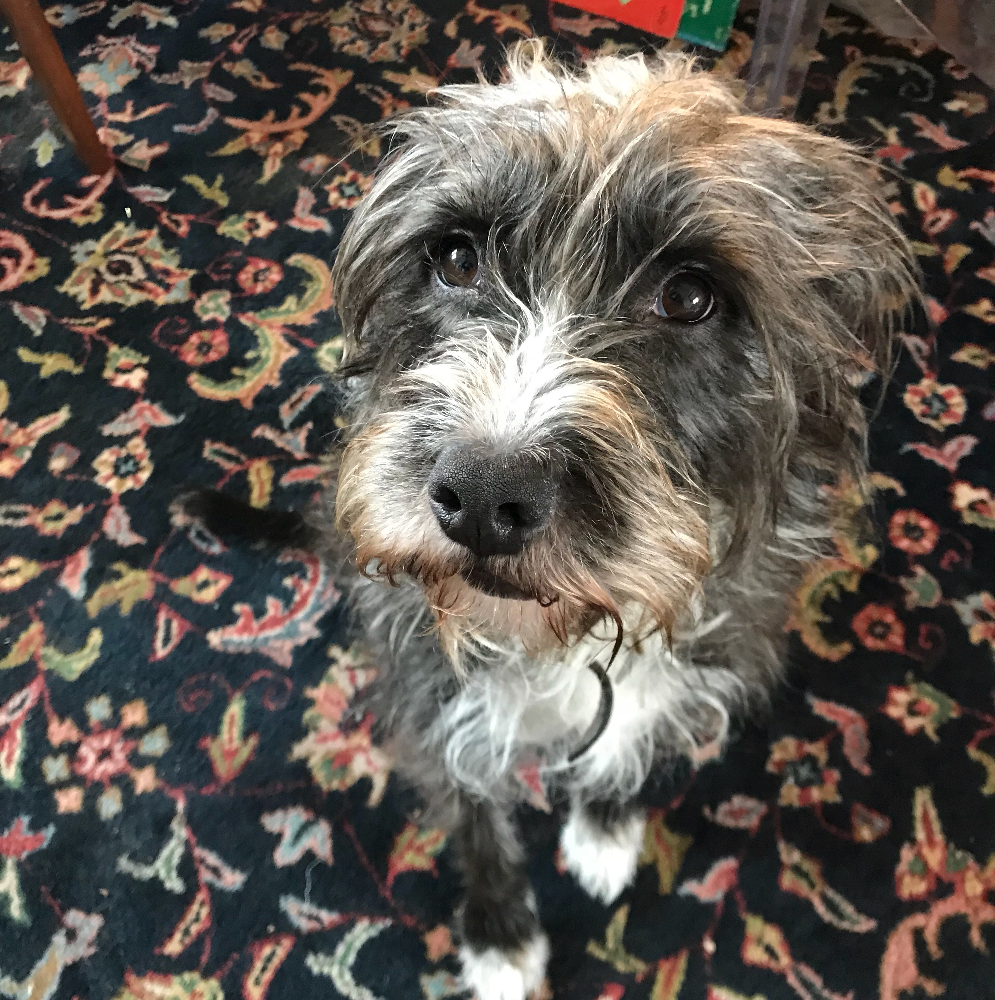

Connect with Me
____________________


About me
________________________________________________________________________
Hello, my name is Nicole Penmer and I am a web developer. I graduated with my BA in Linguistics from Cleveland State University and I served as a rearch intern for Webster’s New World Dictionary. I can speak German and French and I can yell at you a little bit in Hungarian and I am in the process of teaching myself Spanish.
Aside from language and web development, I have experience in business development, sales, lexicography, publishing, community outreach, fundraising, and event organization. I have worn many different hats, and I enjoy waking up every morning with a new and different challenge. I look forward to seeing how I can help you with your project.
I love to read books, play scrabble and watch netflix; my friends call me an "indoor" kid. I live in Cleveland, Ohio with my dog; her name is Edie.
Connect with Me
____________________